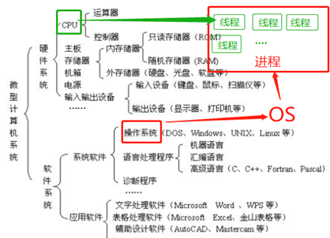
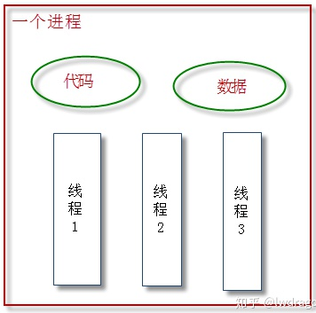
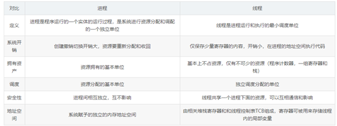
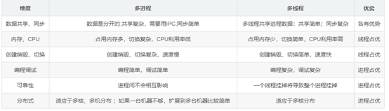

MySQL数据库单进程多线程数据库
概述
MySQL是一个单进程多线程数据库，进程是正在运行的程序的实例，线程（英语：thread）是操作系统能够进行运算调度的最小单位。如32核64线程CPU，单进程多线程数据库，就是CPU在同一时间，有多个CPU线程一起做一件事。前天有个哥们说MySQL只能使用CPU的一个核，简直就是笑话。
一 CPU
目前的CPU是多核多线程的，64核128线程。CPU是一块超大规模的集成电路，是一台计算机的运算核心（Core）和控制核心（ Control Unit）。它的功能主要是解释计算机指令、处理计算机软件中的数据。
CPU参数：64核128线程，它有64个内核（表示有64个相对独立的CPU核心单元组，这是物理概念），每个内核有个2线程（这是逻辑概念。即 超线程技术，它可以实现单个物理核实现线程级别的并行计算。也就是说：OS会认为一个线程也是一个内核，当然这是OS的“错觉”）。
CPU64核心 126线程。64核指的是物理核心（物理概念）。128线程（线程数是一个逻辑概念） 是通过超线程技术，用一个物理核模拟两个虚拟核，每个核2个线程，总数为128线程，在操作系统看来是128核，实际为64核，一个核心，只能同时执行一个线程。即 一个核心就是一个物理线程。
二进程（process）、线程（thread）

进程：是指一个内存中运行的应用程序，每个进程都有一个独立的内存空间，一个应用程序可以同时运行多个进程；进程也是程序的一次执行过程，是系统运行程序的基本单位；系统运行一个程序即是一个进程从创建、运行到消亡的过程。
狭义定义：进程是正在运行的程序的实例（an instance of a computer program that is being executed）。
广义定义：进程是一个具有一定独立功能的程序关于某个数据集合的一次运行活动。它是操作系统动态执行的基本单元，在传统的操作系统中，进程既是基本的分配单元，也是基本的执行单元。
进程：是操作系统（OS）进行资源（CPU、内存、磁盘、IO、带宽等）分配的最小单位；是OS对正在运行的程序的一种抽象，是应用程序的执行实例，每个进程是由私有的虚拟地址空间、代码、数据和其它各种系统资源组成。资源分配给进程，线程共享进程资源。
线程：线程是进程中的一个执行单元，负责当前进程中程序的执行，一个进程中至少有一个线程。一个进程中是可以有多个线程的，这个应用程序也可以称之为多线程程序。
线程（英语：thread）是操作系统能够进行运算调度的最小单位。它被包含在进程之中，是进程中的实际运作单位。一条线程指的是进程中一个单一顺序的控制流，一个进程中可以并发多个线程，每条线程并行执行不同的任务。
线程：是CPU调度和分配的基本单位。
一个进程可由多个线程的执行单元组成，每个线程都运行在同一进程的上下文中，共享同样的代码和全局数据。
每个进程至少有一个主执行线程。 线程数 是一种逻辑概念，是模拟出的CPU核心数。
进程和线程的关系：进程可以简单理解为一个容器，有自己独立的地址空间，其内部的各个线程共享该地址空间。
其实严格讲应该是线程能够获得CPU资源，进程对CPU资源的获取也是体现在线程上的。
线程是CPU调度和分配的最小单位，操作系统会根据进程的优先级和线程的优先级去调度CPU。一个计算机可以并发（同时）的线程数，等于计算机上的逻辑处理器的个数（CPU个数 *每个CPU核心数 *每个内核线程数）。
三串行，并发，并行。
3.1 串行
多个任务，执行时一个执行完再执行另一个。
3.2、并发（concurrency）
多个线程在单个核心运行，同一时间一个线程运行，系统不停切换线程，看起来像同时运行，实际上是线程不停切换。
3.3、并行（parallelism）
每个线程分配给独立的核心，线程同时运行。
单核CPU多个进程或多个线程内能实现并发（微观上的串行，宏观上的并行）；多核CPU线程间可以实现微观上并行。
总结：
1、单CPU中进程只能是并发，多CPU计算机中进程可以并行。
2、单CPU单核中线程只能并发，单CPU多核中线程可以并行。
3、无论是并发还是并行，使用者来看，看到的是多进程，多线程。
四 程序，进程，线程

程序：“程序(Program)”是一个静态的概念，一般对应于操作系统中的一个可执行文件。
进程：执行中的程序叫做进程(Process)，是一个动态的概念。1进程是程序的一次动态执行过程， 占用特定的地址空间。2. 每个进程由3部分组成：cpu、data、code。每个进程都是独立的，保有自己的cpu时间，代码和数据，即便用同一份程序产生好几个进程，它们之间还是拥有自己的这3样东西，这样的缺点是：浪费内存，cpu的负担较重。
线程：进程可以产生多个线程。同多个进程可以共享操作系统的某些资源一样，同一进程的多个线程也可以共享此进程的某些资源(比如：代码、数据)，所以线程又被称为轻量级进程(lightweight process)。
1. 一个进程可拥有多个并行的(concurrent)线程。
2. 一个进程中的多个线程共享相同的内存单元/内存地址空间，可以访问相同的变量和对象，而且它们从同一堆中分配对象并进行通信、数据交换和同步操作。
3. 由于线程间的通信是在同一地址空间上进行的，所以不需要额外的通信机制，这就使得通信更简便而且信息传递的速度也更快。
4. 线程的启动、中断、消亡，消耗的资源非常少。
资源分配给进程，线程共享进程资源。
五线程和进程的区别
1. 每个进程都有独立的代码和数据空间(进程上下文)，进程间的切换会有较大的开销。
2. 线程可以看成是轻量级的进程，属于同一进程的线程共享代码和数据空间，每个线程有独立的运行栈和程序计数器(PC)，线程切换的开销小。
3. 线程和进程最根本的区别在于：进程是资源分配的单位，线程是调度和执行的单位。
4. 多进程: 在操作系统中能同时运行多个任务(程序)。
5. 多线程: 在同一应用程序中有多个顺序流同时执行。
6. 线程是进程的一部分，所以线程有的时候被称为轻量级进程。
7. 一个没有线程的进程是可以被看作单线程的，如果一个进程内拥有多个线程，进程的执行过程不是一条线(线程)的，而是多条线(线程)共同完成的。
8. 系统在运行的时候会为每个进程分配不同的内存区域，但是不会为线程分配内存(线程所使用的资源是它所属的进程的资源)，线程组只能共享资源。那就是说，除了CPU之外(线程在运行的时候要占用CPU资源)，计算机内部的软硬件资源的分配与线程无关，线程只能共享它所属进程的资源。
程序是一组指令的集合，它是静态的实体，没有执行的含义。而进程是一个动态的实体，有自己的生命周期。一般说来，一个进程肯定与一个程序相对应，并且只有一个，但是一个程序可以有多个进程，或者一个进程都没有。除此之外，进程还有并发性和交往性。简单地说，进程是程序的一部分，程序运行的时候会产生进程。


六 总结
MySQL是一个单进程多线程数据库，MySQL数据库管理软件就是程序，进程是正在运行的程序的实例，指一个内存中运行的应用程序，每个进程都有一个独立的内存空间。线程（英语：thread）是操作系统能够进行运算调度的最小单位，是CPU调度和分配的基本单位。MySQL单进程多线程数据库，进程同一时间内并发很多线程给不同的CPU，线程共享相同的内存单元/内存地址空间， 由于线程间的通信是在同一地址空间上进行的，所以不需要额外的通信机制，这就使得通信更简便而且信息传递的速度也更快。所以MySQL数据库选择单进程多线程。


![]()


 举报
举报

 209
209